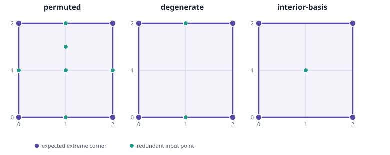

Preliminary exploratory result · source commit 4494557aad4710fe1166b5a681057f106ef8fb91

QuickHull is compared with three existing LP reducers. The A43 basis-reuse and A44 ordered reducers are related variants, not faithful implementations of either paper. Timing covers each public reducer call; LP workspace creation and output validation are outside the interval. Each row below summarizes seven interleaved measured calls per fixture and method. Values are nanoseconds; raw trials and warmups remain in the linked JSONL.
| Fixture | Method | Trials | Median (ns) | Range (ns) |
|---|---|---|---|---|
| degenerate | basis-reuse-related-to-A43 | 7 | 45,188 | 44,769–48,051 |
| degenerate | geometric-quickhull | 7 | 8,451 | 8,032–8,591 |
| degenerate | lp-membership-baseline | 7 | 844,811 | 824,976–864,715 |
| degenerate | ordered-membership-related-to-A44 | 7 | 841,737 | 825,395–852,563 |
| interior-basis | basis-reuse-related-to-A43 | 7 | 40,927 | 39,949–54,547 |
| interior-basis | geometric-quickhull | 7 | 4,819 | 4,400–5,099 |
| interior-basis | lp-membership-baseline | 7 | 620,478 | 608,953–628,789 |
| interior-basis | ordered-membership-related-to-A44 | 7 | 631,303 | 613,354–636,053 |
| permuted | basis-reuse-related-to-A43 | 7 | 49,657 | 40,927–60,833 |
| permuted | geometric-quickhull | 7 | 15,085 | 13,759–15,714 |
| permuted | lp-membership-baseline | 7 | 1,188,713 | 1,180,891–1,204,008 |
| permuted | ordered-membership-related-to-A44 | 7 | 1,189,412 | 1,180,332–1,200,587 |
All 96 calls (12 warmups and 84 measured calls) passed the fixture checks. Passing these small cases does not establish general correctness for arbitrary point clouds. The reducers can retain different numbers of redundant points while representing the same hull.
btulshor.pas method was not run.